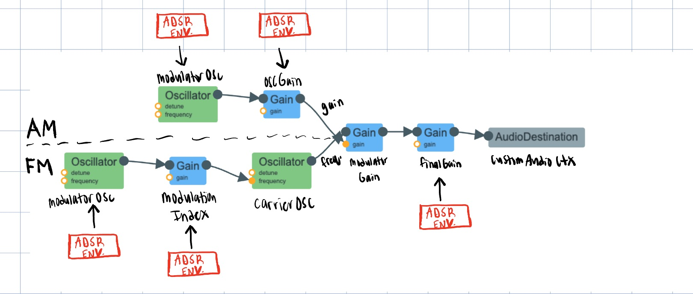

the writeup
Sound
I attempted to recreate the call of a bird, drawing inspiration from Chapter 51 of "Designing Sound" titled "Practical 28 Birds."
This chapter provides detailed insights into the synthesis of bird calls and served as the main inspiration for my design.
Audio Signal Flow graph

The main idea for combining both the FM and AM synthesis components is to use the output of the FM synthesis object as the carrier frequency for AM synthesis.
Key Parts of the Code:
Main flow process: (1) Create AM/FM synthesis objects, (2) Connect AM/FM/AudioDestination, (3) Create envelopes for FM/AM frequencies and gain,
(4) Start oscillators and trigger ADSR envelopes
AM Synthesis

FM Synthesis
ADSR Envelope
Process & Experience:
The main foundation of the sound is combining AM and FM synthesis to correct a rich blend.
Here are some quotes from "Designing Sound" that guided my process:
-"One attempt at understanding the sound of the syrinx focuses on the FM/AM nature" ...."yields excellent results when constructed carefully"
-"Let's suppose we could simplify birdcall to one envelope per parameter"
So how do AM/FM synthesis fit together: By combining both synthesis techniques, you can capture the intricate interplay between amplitude and frequency variations present in natural bird calls. AM synthesis enriches the recreation by adding variations in loudness, while FM synthesis adds the complex frequency modulations that define the unique tonal characteristics of different bird species. Speficically for FM synthesis, birds produce calls with distinctive pitch variations, and FM synthesis is well-suited for replicating these frequency modulations accurately. And for AM synthesis allows you to mimic the dynamic changes in volume that occur within a bird call, adding realism and depth to the recreation, as birds often produce calls with varying levels of amplitude to convey different messages or emotions, such as alertness, aggression, or mating calls.
ADSR Envelopes: As suggested every parameter follows a ADSR envelope, thus I added more gain nodes to help facilitate this process.
For example, the finalGain GainNode helps control the main sound envelope and the extra gainNode in FM synthesis, carrierGain, helps create a nice envelope for the carrier oscillator in FM synthesis.
Here are some quotes from "Designing Sound" that guided my process:
-"One attempt at understanding the sound of the syrinx focuses on the FM/AM nature" ...."yields excellent results when constructed carefully"
-"Let's suppose we could simplify birdcall to one envelope per parameter"
So how do AM/FM synthesis fit together: By combining both synthesis techniques, you can capture the intricate interplay between amplitude and frequency variations present in natural bird calls. AM synthesis enriches the recreation by adding variations in loudness, while FM synthesis adds the complex frequency modulations that define the unique tonal characteristics of different bird species. Speficically for FM synthesis, birds produce calls with distinctive pitch variations, and FM synthesis is well-suited for replicating these frequency modulations accurately. And for AM synthesis allows you to mimic the dynamic changes in volume that occur within a bird call, adding realism and depth to the recreation, as birds often produce calls with varying levels of amplitude to convey different messages or emotions, such as alertness, aggression, or mating calls.
ADSR Envelopes: As suggested every parameter follows a ADSR envelope, thus I added more gain nodes to help facilitate this process.
For example, the finalGain GainNode helps control the main sound envelope and the extra gainNode in FM synthesis, carrierGain, helps create a nice envelope for the carrier oscillator in FM synthesis.
Challenges: The hardest part of the experience was tuning the values for each ADSR envelope, until a sound that somewhat resembled a bird call was produced.
Also fine tuning the frequency value of the FM synthesis carrier oscillator, making it a high frequency of 2400 hertz to help help accurately reproduce
these higher-pitched elements of a bird call.
Resources:
Andy Farnell. (2010). *Designing Sound*. The MIT Press.
Stein, R. C. (1968). Modulation in bird sounds. *The Auk*, *85*(2), 229–243. https://doi.org/10.2307/4083583